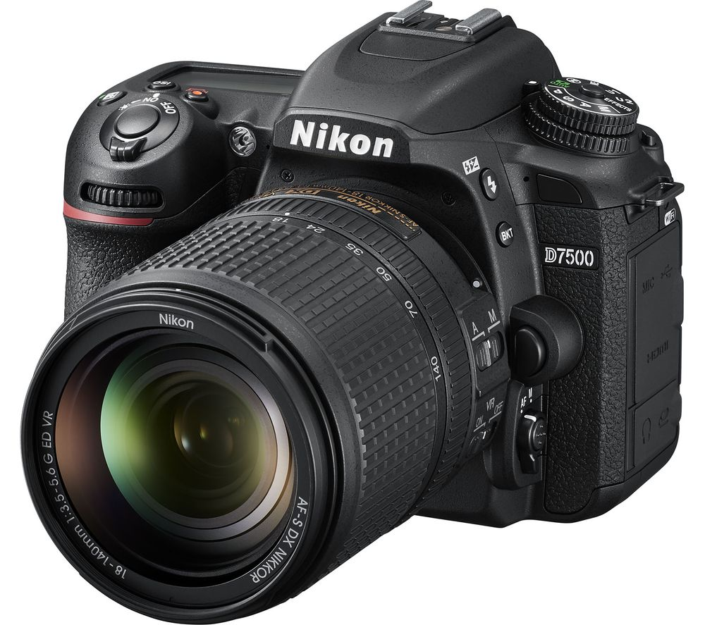
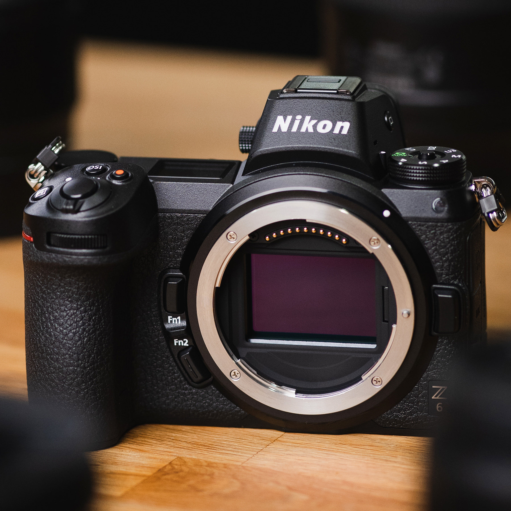
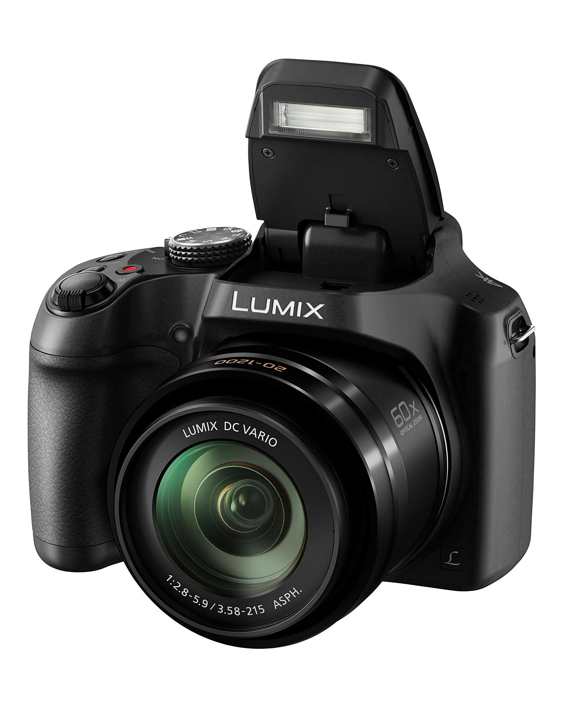
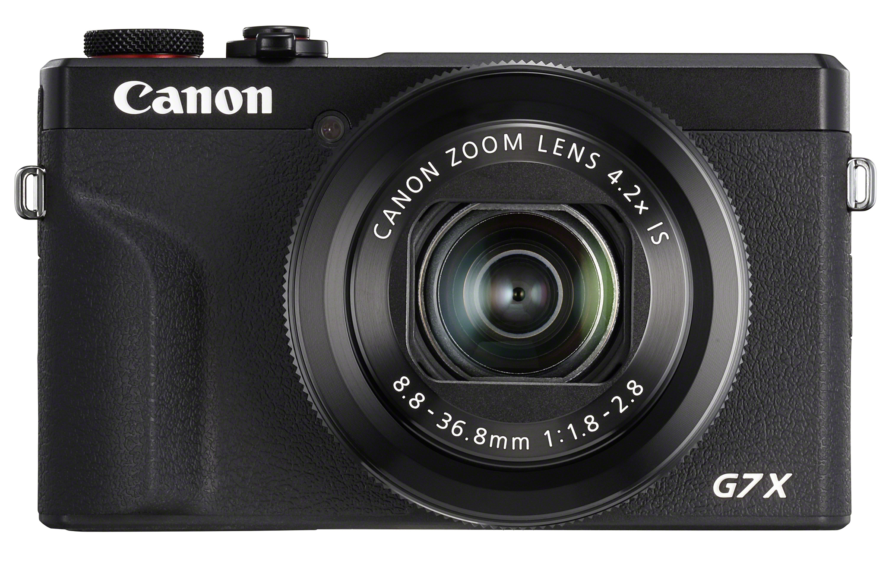
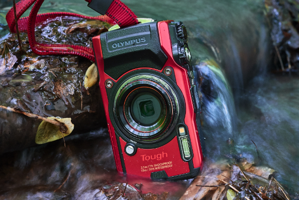
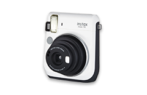
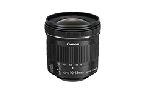
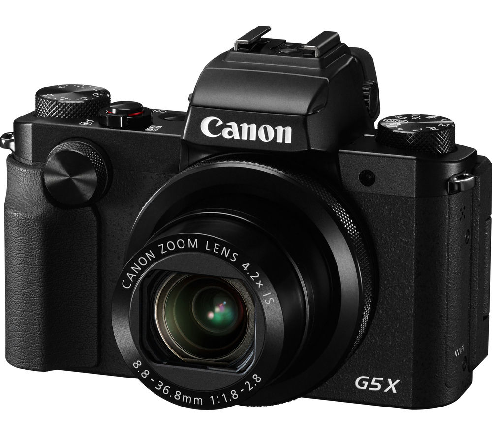
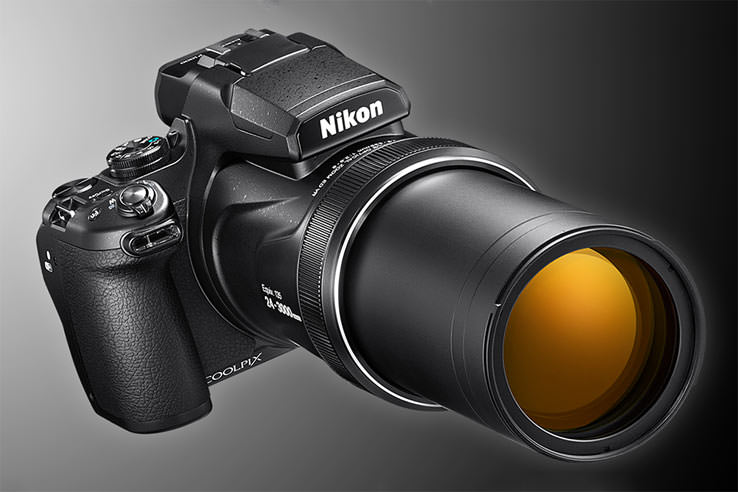
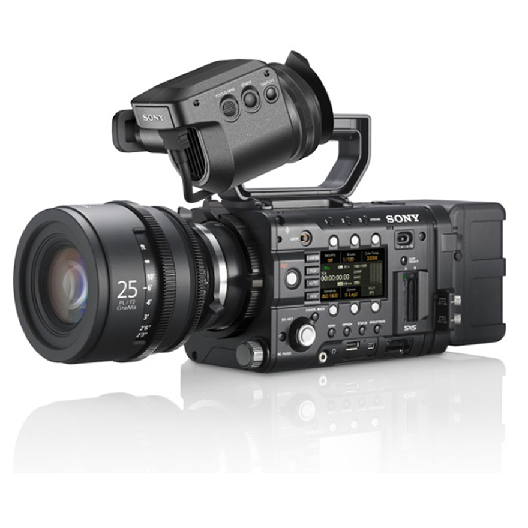

The right camera lets you capture memories, record spontaneous moments and express your creativity. Match camera features with your lifestyle and ambitions. Explore high-resolution photography with professional-style DSLRs, or find the right compact camera to take with you everywhere. Bridge the compact system camera combine hi res imaging with user-friendly designs. Most digital cameras can shoot HD videos too, allowing you to record events in full.
DSLR cameras - Ranging entry-level to professional models, expert image quality, manual control and powerful creativity in your hands. Shoot beautiful high resolution photos and expand your capabilities with a range of compatible lenses.
Mirrorless cameras – compact alternative to DSLR. Take high quality photos and get creative with interchangeable lenses and manual controls. Ideal travel companion, allowing you to discreetly capture truthful shots.
Bridge cameras – equipped with powerful zoom lenses for getting up close and personal with your subjects. Enjoy DSLR-like quality and control in a user-friendly format.
Compact digital cameras – colourful, easy to use and pocket-friendly, these good cameras boast impressive image quality, intuitive interfaces and durable bodies, making them perfect for travel and everyday moments.
Tough cameras – When off on mountaineering adventure or taking the kids to the beach, a tough camera lets you capture stunning shots worry-free. Designed to be waterproof, freezeproof, dustproof and resistant to drops.
Instant cameras – more than just a retro throwback, instant cameras skip the PC by letting you capture and print unique shots in moments. Work by printing your photo direct from the camera using special film – perfect for giving a personal gift or putting together a photo album to treasure.
Lenses – whatever you love to photograph – from sweeping wide-angle landscapes to close up portraits of insects. Compatible with your DSLR or mirrorless camera mount and look out for features such as image stabilisation for steady shots and silent focusing.
Superzoom cameras – get closer without moving due to a high optical zoom, shoot subjects in distance such as wildlife, concerts, sports and action. Not just telephoto photography capture brilliant landscapes and portraits too.
High performance compact – extra creative control best of both worlds for beginner or travelling hobbyist. Has a larger sensor and faster processor than a standard compact for more detailed images and better low light performance.
Sony's engineers have always collaborated with cinematographers retaining the quality and durability for harsh shooting environments, while dramatically reducing manufacturing resource use. This includes reduction of raw material consumption through lighter and more compact products to lessen the impact on the earth. They create a 20% lighter, more compact, 40% smaller camera without reducing performance and reconsidering the materials use. Therefore, by reconsidering the structure, improvements were made on overall heat emission. The two internal turrets for ND filters allow eight steps of servo ND exposure control It offers unmatched shooting flexibility also helps to reduce the outer circumference.
  © Luiza Bardan.